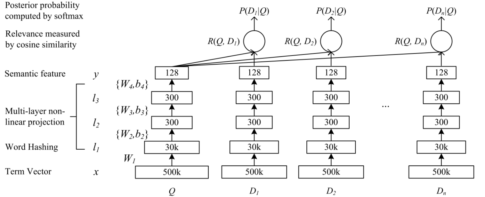
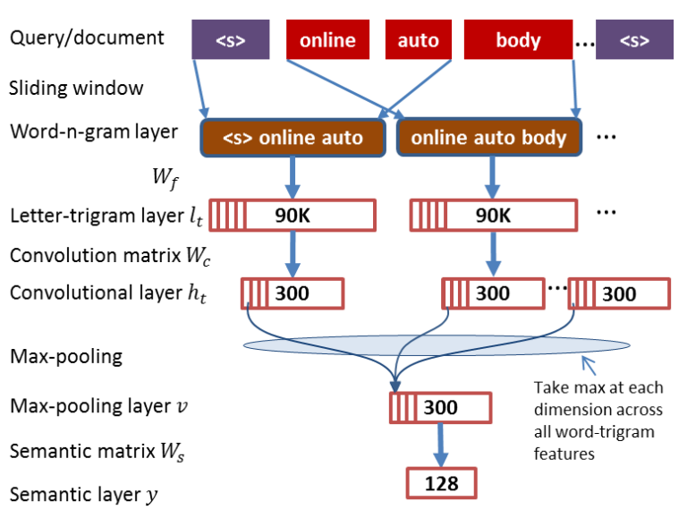

DSSM是在2013年提出的，应用场景是IR中的Rank问题，即，给定一个query后，计算doc(url)与这个query的语义相关性。
DSSM
模型结构
先上DSSM的模型结构图

可以将模型分为两步理解：
第一步是feature representation过程，使用DNN神经网络将文本的高维稀疏向量 投影到文本的低维语义特征向量。DNN网络接收query或者doc的term vector(如one-hot编码)，为了使one-hot编码这种高维特征能够在模型中计算，文章使用了一个小技巧(Word Hashing)将高维稀疏特征表示为低维稀疏特征 得到 $l_1$层。从$l_1$到$y$是标准的三层DNN神经网络。$y$是一个具有128维的特征的向量，它是原始的query或者doc的低维语义向量表示。
将query或者doc的原始Term Vector表示为$x$ ，$y$作为DNN网络的输出，$l_i$作为DNN网络的隐藏层节点值，$W_i$是DNN网络的第$i$层的权重矩阵，DNN网络的层数记为$N$。那么从$x$到$y$的前馈计算过程如下：$$
\begin {aligned}
l_1 &= W_1x \\
\\
l_i &=f(W_i l_{i-1}+b_i) , i =2,\dots,N-1 \\
\\
y &=f(W_N l_{N-1}+b_N) \\
\end {aligned}
$$其中$f$为神经网络中隐藏层和输出层的激活函数，论文中使用的是$\tanh$:
$$
f(x) = \frac {1-e^{-2x}}{1+e^{-2x}}
$$第二步是语义相关性的计算过程，使用第一步得到的query和doc的语义向量表示$y$计算query和doc的相关系数。论文中使用的是余弦相似度：
$$
R(Q,D)=\cos(y_Q,y_D) = \frac{y_Q^{\mathrm{T}}y_D}{\Arrowvert y_Q\Arrowvert \Arrowvert y_D\Arrowvert}
$$
其中 $y_Q$ 和 $y_D$ 分别表示query和doc的语义向量表示(第一步的输出)。当给定一个query和候选doc后，就可以按照上面的方法计算其相关性得分，并按照相关性大小排序(个人感觉生产环境下不会这样干，因为生产环境中面临的情况更加多样。将DSSM的相关性得分作为最终ltr模型的输入特征还是更加可行的)。
损失函数
上面介绍的是DSSM模型的前馈网络结构。DSSM做为一种监督学习方法，还需要有一个损失函数作为训练的目标。
DSSM模型的输入是一个query列表和每个query对应的用户点击的doc序列。论文奖给定一个query $Q$ ,用户点击一个特定doc $D$ 的概率定义为：
$$
p(D|Q) = \frac{\exp(\gamma R(Q,D))}{\sum_{D^{‘} \in \boldsymbol {D} } \exp(\gamma R(Q,D^{‘} ))}
$$
其中$\gamma$是一个softmax函数的平滑系数，是一个经验参数。
注意: 分母中有一个粗体的$\boldsymbol{D}$ 表示与$Q$对应的的所有doc的集合, 该集合包含如下内容：
- 在训练样本中与 $Q$ 相关的所有doc的集合(正例)，下文中用$D^+$表示与 $Q$ 相关的doc
- 在训练样本中，相对于每个 $Q$ ,还随机从数据库中选择了4个负例(与 $Q$ 不相关的doc)，下文中用 $D^-$表示 。
集合 $\boldsymbol{D}$包含与$Q$对应的所有$D^+$ 和$D^-$ ，即：
$$
D^+ \in \boldsymbol{D} \\
D^- \in \boldsymbol{D}
$$
模型的目标函数就是给定$Q$时所有正例的最大似然。损失函数取其负对数：
$$
\begin {aligned}
L(\Lambda) &= - \log \prod_{(Q,D^+)} p(D^+ | Q) \\
&= - \sum_{(Q,D^+)} log p(D^+ | Q)
\end {aligned}
$$
Word Hashing
由于DSSM的输入数据是 one-hot 编码，如果直接将其放入圣经网络中计算将会带来两个问题:
- vocabulary太大，输入层的稀疏向量将会具有非常高的维度。
- 会出现 oov (out of vocabulary)的问题
Word Hashing的设计就是为了解决以上问题的。他是基于字母级别的n-gram设计的。如单词 good：
- 在单词两端加入临界符号 #good# 。
- 按照n-gram将其分割为多个部分，如trigrams 将得到[#go, goo, ood, od#]四个部分。
- 单词good 将用[#go, goo, ood, od#] 的向量表示。
这种方式可以非常有效的解决 vocabulary 太大的问题，因此英文单词才26个，3个字母的组合都是有限的)。另外也不会出现 oov 问题， 举个例子：discriminative，discriminate，discrimination 三个单词的意思很像，他们的Word Hashing中也有大部分是相同的。
这样两个不同的单词也有可能具有相同的tri-grams，针对这个问题paper里面做了统计，这个冲突的概率非常的低，500K个word可以降到30k维，冲突的概率为0.0044%。
Word Hashing在英文场景下很有效，但是中文场景估计就没有这样的效果了吧。
CLSM
CSSM的一个重要不足是它将整个query/doc作为一个bag处理，没有考虑到term的上下文信息，文本的上下文信息丢失。如. “我爱你”和“你爱我”将会映射到同一个y(特征向量)。
CLSM(Convolutional latent semantic model)于2014年提出，又称CDSSM。它是解决了CSSM的文本上下文丢失问题。在模型结构上，它将DSSM的DNN换成了CNN，这也是其名称中Convolutional 的由来。
模型结构

入上图所示，对于一个query/doc的语义向量$y$ 的训练过程可以分为如下5个步骤：
(0) 预处理阶段：将句子的开头和结尾加上pading符， 上图中的<s>
(1) a word-n-gram layer obtained by running a contextual sliding window over the input word sequence (i.e., a query or a document),
按照固定大小(上图中是3)的滑动窗口从输入句子中提取word-n-gram层
(2) $l_t$ :a letter-trigram layer that transforms each word-tri-gram into a letter-trigram representation vector,
将word-n-gram层的每个word用3-gram的word hashing表示(每个word可以表示为30K维的向量)，word-n-gram层($n=3$)中的每个bag可以表示成$30K \times 3 = 90K$维度的向量
(3) $h_t$ :a convolutional layer that extracts contextual features for each word with its neighboring words defined by a window
以固定大小的窗口对letter-trigram layer每个bag的90K维度的向量做卷积，每个bag映射到300维的向量上得到convolutional layer。卷几层的激活函数使用$tanh$
$$
tanh(x) = \frac {1-e^{-2x}}{1+e^{-2x}}
$$
到此时为止word-n-gram layer、letter-trigram layer和convolutional layer三层，每一层包含bag的数量是和句子的长度有关的，句子越长bag数量越多
(4) $v$ :a max-pooling layer that discovers and combines salient word-n-gram features to form a fixed-length sentence-level feature vector,
$$
v(i) = \max_{t=1,\dots,T} \{h_t(i)\} , i=1,\dots,K
$$
其中$v(i)$为$v$的第$i$个维度，$T$为卷几层包含的向量的个数，K为卷积层每个向量的维度(都是一样的)，K也是$v$的维度
(5) a semantic layer that extracts a high-level semantic feature vector for the input word sequence
最后通过一个非线性映射得到语义向量$y$ ：
$$
y=\tanh(W_s \cdot v)
$$
损失函数
与DSSM相同
分割线，coding工作繁忙，先写这些，回头在补！
DSSM-LSTM
如上文所述，DSSM不能够很好的捕捉上下文信息，所有使用LSTM替换DSSM的DNN使其能够捕捉到文本的上下文信息。
MV-DSSM
该模型主要是用于推荐系统。
参考资料
DSSM: Learning Deep Structured Semantic Models for Web Search using Clickthrough Data
CLSM: A Latent Semantic Model with Convolutional-Pooling Structure for Information Retrieval
DSSM-LSTM:Semantic Modelling with Long-Short-Term Memory for Information Retrieval
MV-DSSM:A Multi-View Deep Learning Approach for Cross Domain User Modeling in Recommendation Systems